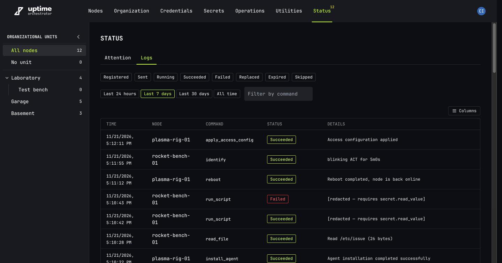
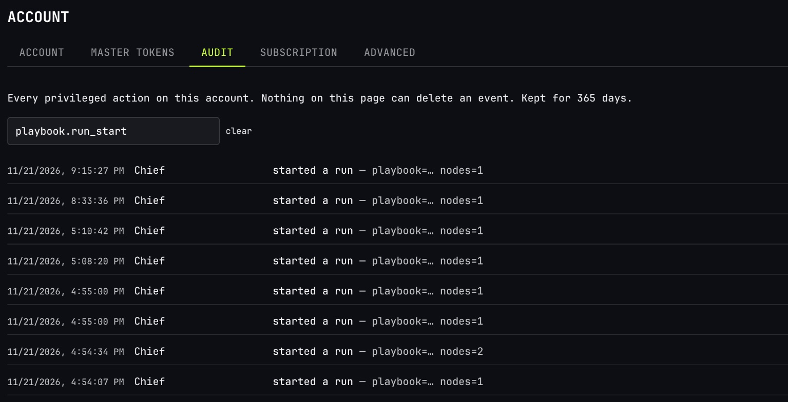

Status, attention and the audit trail
See which nodes need you, fix them in bulk, and find what was sent and who did what.
Open Status → Attention to see every node that needs you. The number next to Status in the top bar counts open conditions, so one node can count twice.
What needs you
Click a chip to show only the nodes with that condition. To fix several at once:
- Tick the nodes, or click Select all.
- Click the action in the bar above the table, for example Update agent 2.
- Confirm.
The results list each node as Sent, Queued, Skipped or Failed. The count covers only nodes the action can reach. A node still carrying an earlier command shows Running, so wait for that command to finish first.
| Condition | What to do |
|---|---|
| Offline | Check power and network. Queued commands wait for it. |
| Not back yet, Waiting to leave recovery | Usually wait. |
| Never connected | Check the device was flashed and has network (Adding a device). |
| Waiting for approval | Approve, or reject it in the node panel. |
| Agent update available | Update agent. |
| Bootloader update available | Update bootloader, then reboot. |
| Bootloader flashed, reboot to apply, Hardware profile applied, reboot to bring it up | Reboot when it suits you. |
| Hardware profile not applied | Apply profile. |
| Utility not applied | Apply utilities (Utilities). |
| Device login setup failed | Fix the cause, then Re-apply (Access and credentials). |
| In recovery | Finish the work there, or boot the OS (Installing an OS). |
| Failing to boot, Sent to recovery after failed boots | Find why the OS won't boot. Then Acknowledge the recovery mark. |
| Watchdog disarmed by the device | Find why it kept restarting, then re-arm (Hardware and watchdog). |
| Unit no longer exists | Move the node to an existing unit. |
| Watcher cannot netboot | Fix the boot order at the device. |
| Device credential unreadable | Fix the server's keys (configuration reference). |
| Command stopped reporting | Check the node's command history. |
| Device limit reached | Open subscription, or delete a node. |
Hide stops a node's conditions counting in this browser until a condition changes. If a check could not run, for example because the agent release list was unreachable, a line above the table names it.
Find a command that was sent

Status → Logs lists every command sent to any node, whether you, a playbook or the platform sent it. Filter it by status, time window and command name, and click a row to open that node's panel. Replaced, Expired and Skipped are not failures. Details that may hold secret values read [redacted — requires secret.read_value].
See who did what

Open the account menu, then Account → Audit. Only a Super Admin sees this tab. It lists every privileged action, such as secrets read, commands sent, terminals opened, playbooks started and members changed.
Filter by action takes an exact name such as playbook.run_start. Actions the platform took on its own show the platform as the actor. Entries carry no source address. Nothing in the UI can delete an event.
How long entries are kept
Audit events are kept 365 days by default (AUDIT_EVENT_RETENTION_DAYS, 0 keeps them forever), and the line above the list shows this account's value. To keep them longer, export them with GET /api/v1/audit-events before they age out.
Command history is kept forever by default (NODE_COMMAND_RETENTION_DAYS) and 90 days in the community compose file. A command still waiting for delivery is never deleted. Finished playbook runs are kept 30 days.
Next: Playbooks.